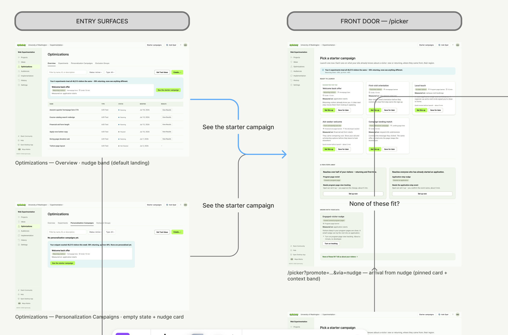
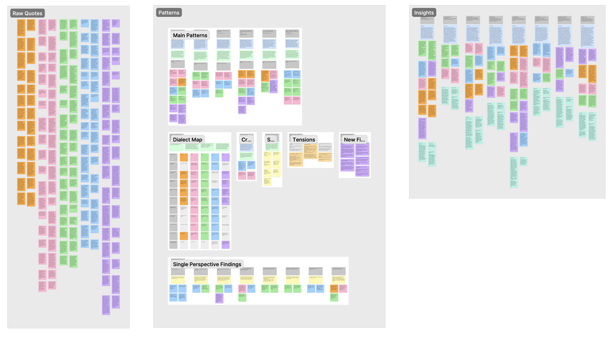

What is Optimizely?
Optimizely is a digital experience platform for A/B testing, feature flagging, and website personalization. It lets companies experiment with different variations of their web pages or products to determine which versions perform best with their users, so they can use data-driven insight to improve engagement, conversion, and the overall customer experience.
The Challenge
Optimizely sits between a company's marketing team and that company's customers, deciding which version of a page each visitor sees. Personalization is one product in that suite, and it is the one with the widest gap between what customers say they want and what they ship. Most customers who buy it never use it: an executive signs the contract and hands the tool to a marketing team that never chose it, doesn't know why they need it, and finds it too hard to use. They drift back to the parts of Optimizely they already understand and forget personalization exists.
Only 10 or 20% of our customers who have personalization use it. They're paying for it, and they're just not using it.
Optimizely SME
The product itself is good — of the 1 in 4 companies that successfully launch a first campaign, 82% keep going. The problem is getting them to that first result.
I don't feel like we ever got full clarity of what we mean by personalization. Candidly, it was an internal struggle.
Optimizely SME
That gap between intent and usage became the project. It is not what we were originally asked to work on.
The Solution
Optimizely brought us in to build a personalization agent for Opal, Optimizely's agentic platform. The goal was to help clients carry out more tasks inside a product they already owned.
What we built instead was an activation workflow. The personalization product already existed; the work was getting new customers into it and giving the customers already in it a reason to stay.

On-Ramp: an activation flow inside the experimentation product marketers already use. It brings them one campaign they can launch today on data they already have, shows what's one step away, and reports the result they can act on and share.
Those are two audiences. A marketer who has never launched a campaign needing a way that doesn't start with a manual data audit. And, a marketer already running campaigns needing a prompt they wouldn't have gone looking for: "here is something you can run right now," or "here is something you could run after connecting one more data point." The first group gets activated, the second gets a quality-of-life update, and Optimizely gets a product its customers actually use.
We treated personalization as a mode inside the experimentation workflow marketers already use. That set a constraint for everything I designed: it had to fit inside a workflow marketers were already familiar with.
The Outcome
Research changed our brief from "building more agents" to "fix personalization's activation." Three findings became three design decisions, and I worked on the two with the least product support behind them. The prototype was tested with marketers, faculty critics, and multiple teams at Optimizely.
Discovery & Reframing the Brief
I needed to understand how marketers actually do personalization, and why interest so rarely turns into a shipped campaign. I also needed enough evidence to either confirm the original direction or argue for a different one.
As a team we ran 11 interviews: six subject matter experts inside Optimizely and five marketers outside it, some on competitor tools. Alongside that we did desk research on Optimizely's existing personalization and experimentation products and on the wider market. I ran 4 of the eleven interviews, then synthesized insights and findings.

The original brief assumed the problem was task automation. What we found didn't support that. The problem was activation. Customers found the product hard to navigate, couldn't work out what data it needed from them, and quietly stopped using it rather than actively cancelling. These three findings anchored everything that came after.
Finding 1 — Personalization kept getting postponed because it felt like a separate project.
A/B testing was simpler than personalization. Personalization felt like the next level that I was trying to… get to.
There's just no time to think about… what's a really good personalization campaign we can be doing.
Marketer
Insight: personalization loses priority when it's framed as a separate project rather than an extension of a team's current workflow.
Finding 2 — Marketers had useful data, but thought they needed more before they could begin.
What marketers believed: "I don't have a CDP (customer data platform), so therefore I can't do it."
What the product already did: "It'll show your customers' geolocation, their device type, and their visit behavior so you can define segments."
Insight: marketers aren't only missing data. They're missing confidence that the data they have is enough to start.
Finding 3 — Marketers rarely saw impact in their results, and the ones who did weren't sure it was worthwhile.
I want to know how much juice I'm getting from the squeeze.
Marketer
Insight: marketers don't want more data. They want to know whether it worked, and what to do next.
Changing the scope. We took this back to our advisors and pushed to change the brief. We proposed a fix inside the personalization product itself, aimed at the activation gap our research found, rather than an agent layered on top of it. Building the original agent would have added capability to a product customers were already abandoning.
Creating more agentic features for personalization
Tackling the churn in the personalization product
The advisors agreed and the project refocused. The three insights became three design decisions: bring a drafted campaign into the workflow marketers already use — a nudge on the experiments page they already visit, not a tab they've never opened; clearly show what is possible, what needs data, and how to get it, which became the campaign picker; and make campaign results actionable and shareable, which became the results pages.
The Campaign Picker
Marketers stalled because they believed they needed a complete customer profile before they could start. The intuitive fix is to show them everything personalization can do, so they see how much is possible. But a full gallery only deepens the problem. Every campaign looks equally available, and none of them say whether this marketer, with this data, can run it today. The uncertainty that stopped them in the first place is still there, now with even more options attached to it.
Design problem: give a marketer one campaign they can launch today, without requiring them to understand their entire data setup first.
The picker sorts every campaign into one of three states, and the state is the first thing a marketer sees.

Ready to launch. Campaigns that run on data Optimizely already collects: new versus returning, referral source, region, device. Each card names the audience, the placement, the time to set up, and the metric it's measured on.
A few steps ahead. Campaigns that are one or two data points away. It will tell you what is needed to get started, and the marketer never has to know whether their setup counts as complete.
Grows with your data. Campaigns that need something bigger, like product-page view tracking. Opal drafts the setup and the marketer approves it. When a campaign needs code, On-Ramp writes the handoff for the user: what to install, why, and a message that can be sent straight to a developer.
The campaign picker keeps working after the first run. As a marketer connects more data, "one step ahead" campaigns cross over into runnable ones and shows them without being prompted.
The Results Pages
Finding three had the least product support behind it. A/B testing has trained marketers to expect a result to come with evidence behind it, and to distrust one that arrives without any. Personalization offered them nothing equivalent. A flat conversion number doesn't answer the question they're actually asking, which is whether they should believe it.
Design problem: decide what a marketer sees first, in what order, and with how much confidence attached. The page had to give an honest read on whether a campaign moved their metric, even when the honest answer was that there wasn't enough data yet.
My work here was presentation: what gets shown first, what gets qualified, and what the page refuses to claim.


What We Sent Off
What we handed off:
A prototype covering the full flow: the nudge on the experiments page, the campaign picker, setup and tracking install, and the results page.
A PRD, documenting the research behind each screen.
Three features, each answering one research insight:
| Insight | Feature |
|---|---|
| Marketers don't know where to start | A nudge on the experiments page they already use, with one drafted campaign |
| Marketers think they can't start yet | A picker sorting campaigns by ready now, one step away, or needs setup |
| Results don't tell them anything | A results page leading with a plain count, qualified by sample size |